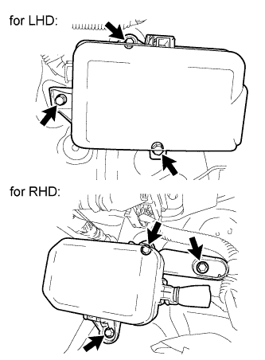
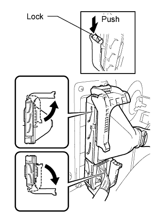
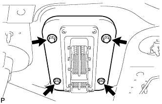
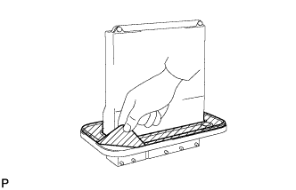
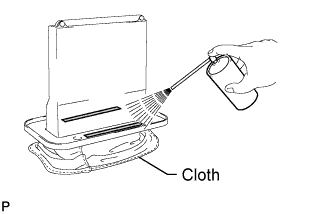
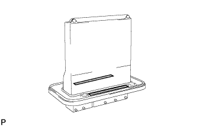

ECM > REMOVAL |
| 1. DISCONNECT CABLE FROM NEGATIVE BATTERY TERMINAL |
| 2. DISCONNECT CONNECTOR HOLDER BLOCK |
 |
Remove the 3 bolts and move the connector holder block so that the ECM can be removed in the next step.
| 3. REMOVE ECM |
 |
Raise the 2 levers while pushing the locks on the 2 levers.
Disconnect the 2 connectors.
 |
Remove the 4 bolts and ECM.
| 4. REMOVE GASKET |
 |
Peel off the gasket.
 |
Spray gasket remover or equivalent on the remaining tape of the gasket.
 |
Remove the tape of the gasket without using bladed objects.